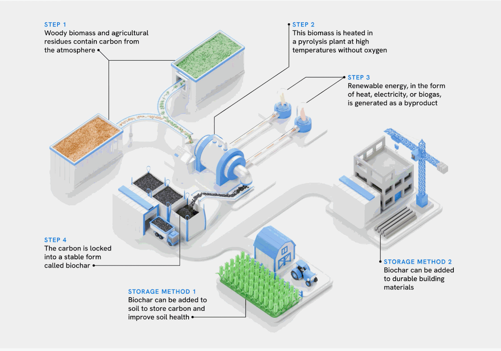

Project CERULEAN
Project CERULEAN is MCC's newest project team developed with a goal of designing a zero-emission biochar production facility with potential for real-world scale up. We hope to optimize our biochar product to use in applications on campus to enhance natural carbon sinks like soil.
Contact lsimakas@umich.edu or shaunsh@umich.edu if you are interested in joining!
